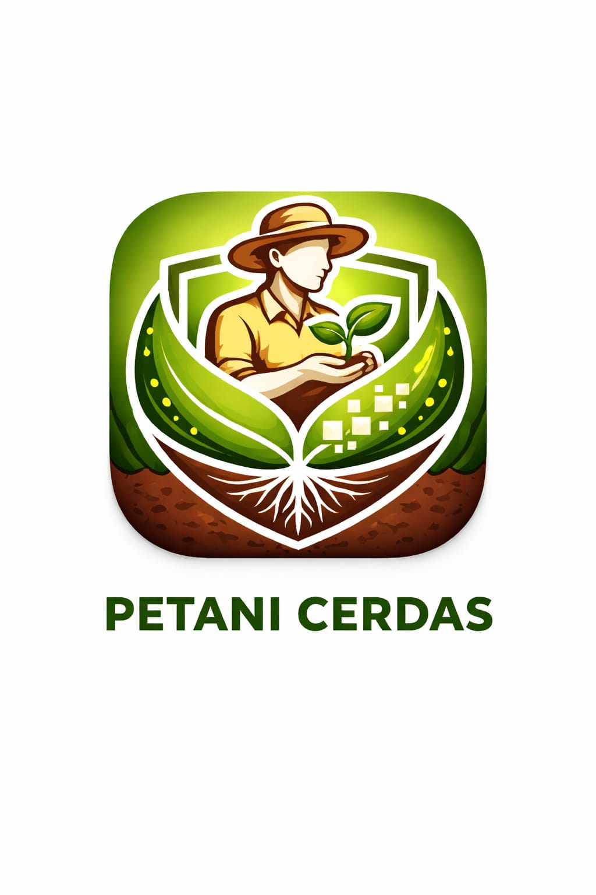

Memuat Sistem...
MASUK
👤
←
Pilih Tanaman
🌾 Padi
🌽 Jagung
🌶️ Cabai
×
M
Nama User
+62 812-3456-7890
Ringkasan Lahan
0
Total Log
Aktif
Status Akun
KELUAR
👤
←
Nama Tanaman
Informasi Umum
Perawatan
Mulai Bertani
Log Aktivitas Lahan
Scan Hama AI
👤
←
Judul
👤
←
Monitoring:
Padi
SELESAI
👤
←
Log Aktivitas Lahan
Status Pemupukan:
Belum Pupuk
Sudah (Urea)
Sudah (NPK)
Sudah (Organik)
Simpan Data
👤
←
Scan Hama AI
KAMERA AKTIF
Ambil Gambar & Analisis